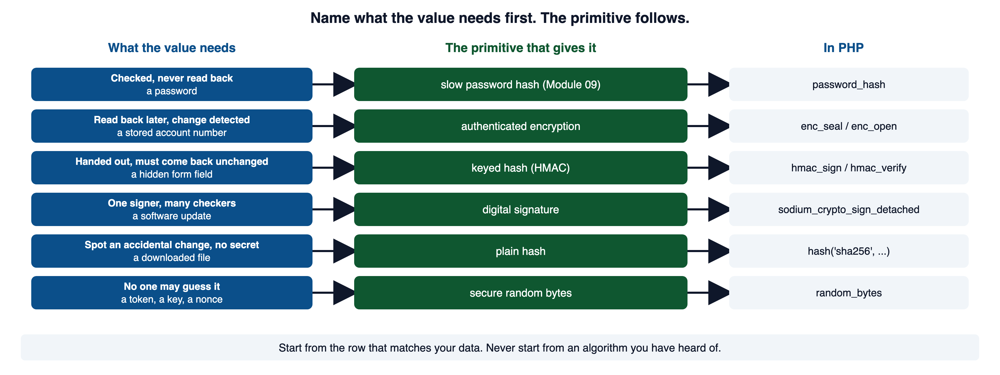
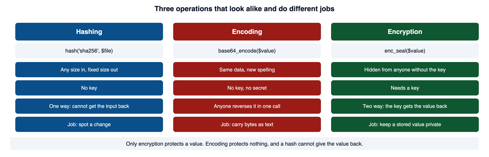
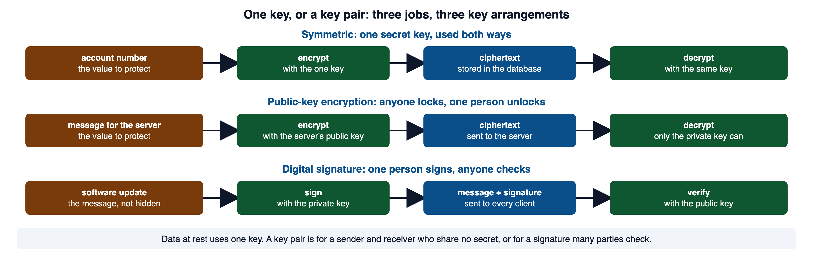
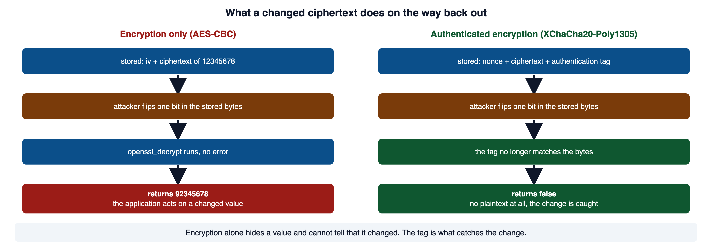
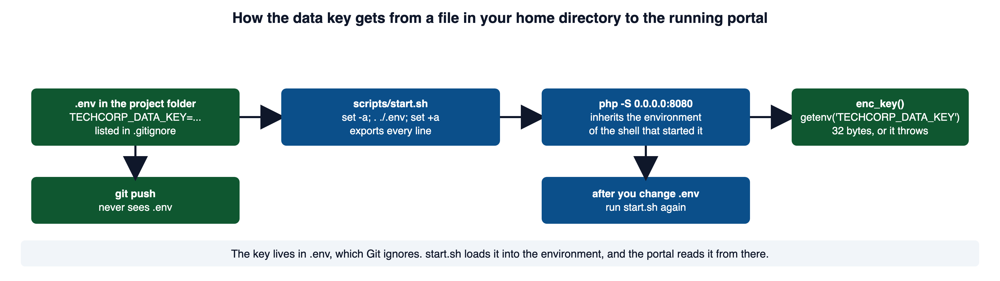
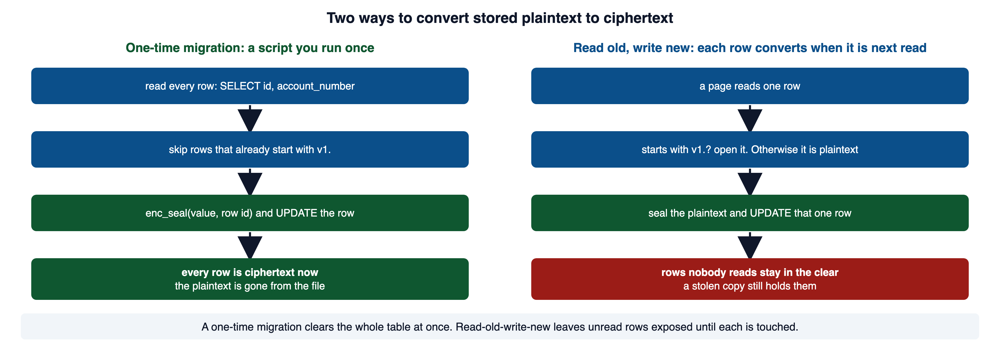
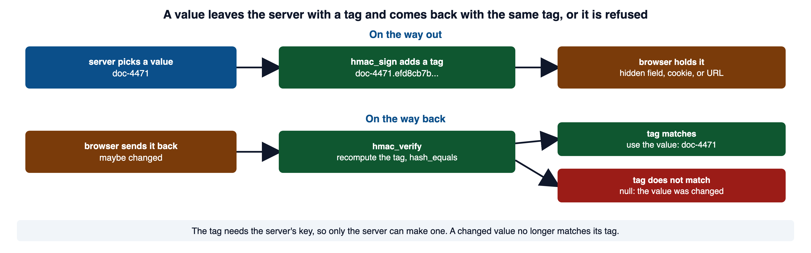

A database export leaves the server, taking protected fields and password digests with it. Login limits cannot control guesses made against a copied file. This module distinguishes hashing, encryption, authentication of data, and the keys each mechanism needs.
Read this page with Cloud Shell open, so you can save each short example as a small PHP file, run it with php file.php, and see what it prints. Red code blocks show a shape to recognize and never ship. Green code blocks show the pattern to copy.
1Required reading
These two are required reading for the module. This page teaches everything the assignment and the quiz need; the readings give the same material in the industry's own words, which is what a scanner finding, a CVE advisory, or a bug report will use.
- OWASP Top 10:2025 A04 Cryptographic Failures. The risk category for missing encryption, weak algorithms, predictable random values, and leaked keys. Its prevention list has the rule this module is built on: always use authenticated encryption instead of plain encryption.
- OWASP Cryptographic Storage Cheat Sheet. The operative reference for this module. It says to store less data first, to prefer an authenticated cipher mode, to generate keys and tokens from a secure random source, and to keep keys apart from the data they protect.
2Start from the property the data needs
Module 01 section 3 named the three security objectives. Cryptography serves two of them. Confidentiality means the data is unreadable without the key. Integrity means a change to the data is detected. Most cryptographic failures in real code are not a broken cipher. They are the wrong tool for the data, because the developer started from an algorithm they had heard of instead of from what the data needs.

The same mapping as a table. Find the row that matches your data, and the primitive is in the next column. The last column names the PHP function and, where the course library has one, its helper in lib/.
| The value needs | Primitive | PHP, and the course helper |
|---|---|---|
| To be checked, never read back (a password) | slow, salted password hash | password_hash; pw_hash (Module 09 section 3) |
| To be read back later, with any change detected | authenticated encryption (AEAD) | sodium_crypto_aead_*; enc_seal, enc_open |
| To come back from the browser unchanged | keyed hash (HMAC) | hash_hmac; hmac_sign, hmac_verify |
| To be checked by many parties against one signer | digital signature | sodium_crypto_sign_detached |
| To show an accidental change, with no secret involved | plain hash | hash('sha256', ...) |
| To be impossible to guess (a token, a key, a nonce) | secure random bytes | random_bytes; token_issue |
The OWASP Top 10 entry in section 1 defines the category this way: failures from missing cryptography, weak cryptography, and leaked keys. The Cryptographic Storage Cheat Sheet in section 1 orders the decisions the same way this section does: decide what needs protecting, then pick the construction.
3Hashing, encoding, and encryption are three different jobs
These three words get used as if they mean the same thing. They are three operations with three purposes, and mixing them up produces a whole family of findings.
A plain hash is the right tool when the job is to notice that a file changed. Here the same sentence is hashed twice, with and without a final period.
<?php
echo hash('sha256', 'The quick brown fox'), "\n";
echo hash('sha256', 'The quick brown fox.'), "\n";5cac4f980fedc3d3f1f99b4be3472c9b30d56523e632d151237ec9309048bda9
42e25dd386eb55b56db34af535fab5231db8cf1b588af95bc9c32ef849507fc5That is how a download page works. The site publishes the digest of the file. You hash the copy you received and compare. A fast hash such as SHA-256 is right for that job. Speed is a virtue when the file is large.
A password is the one value you hash but never read back, and speed is the wrong property for it. Module 09 section 3 teaches that storage: a slow, salted, adaptive hash through password_hash, never a fast hash such as MD5. MD5 and SHA-1 also carry a second problem. They are broken algorithms in their own right, and a finding that names them cites use of a broken or risky cryptographic algorithm (CWE-327).
Encoding looks like protection and is not.
<?php
// WHY: Base64 is reversible encoding and provides neither secrecy nor integrity protection.
$looksProtected = base64_encode('routing-secret-42');
echo $looksProtected, "\n";
echo base64_decode($looksProtected), "\n"; // no key, one function callVulnerable. Why: Base64 is reversible encoding and provides neither secrecy nor integrity protection.
cm91dGluZy1zZWNyZXQtNDI=
routing-secret-42Base64 has a real job. It carries bytes that are not text, such as a key or a ciphertext, through a text column or a URL. The course library uses it for exactly that in section 6. The job is transport, never secrecy.

Encryption is the only one of the three that protects a value you must read back. It needs a key, and the rest of this page is about using it correctly.
PHP Manual: hash documents the algorithm names and the lowercase hexadecimal result. W3Schools: PHP sha1() Function has a live editor if you want to hash a string and watch the digest change. PHP Manual: base64_encode says what the encoding is for: making binary data survive a transport that is not 8-bit clean, at a cost of about 33 percent more space. RFC 4648, which defines base64, says in its security section that the encoding "does not provide any computational confidentiality."
4One key or a key pair
Two families of encryption solve two different problems. Reaching for the wrong family is a design error, not a coding error.
A key pair solves two problems that are often confused.
- Public-key encryption: anyone with the public key can encrypt, and only the private key can decrypt. This gives confidentiality toward one recipient who never shared a secret with the sender.
- Digital signature: the private key signs, and anyone with the public key verifies. This gives integrity and authorship to many verifiers. It does not hide the message. Section 10 shows the code.

The portal stores its own data and reads it back itself. One key is the right arrangement, and the rest of this page uses one key.
The Cryptographic Storage Cheat Sheet names AES as the preferred symmetric cipher with a key of at least 128 bits, and says custom algorithms are never acceptable. PHP Manual: Sodium is the extension this module uses. It covers encryption, decryption, signatures, and more, and it marks XChaCha20-Poly1305 as the preferred authenticated construction.
5Encryption alone does not detect a change
A value the application must recover later needs confidentiality. Storing such a value in the clear is a named weakness, missing encryption of sensitive data (CWE-311). Confidentiality alone is a trap, though, and this section shows why.
Encryption hides content. On its own it does nothing to stop an attacker from changing the stored bytes. Here a bank account number is encrypted with AES in CBC mode, which is encryption only. The initialization vector is fixed at zero here so the output repeats; real code generates it with random_bytes.
<?php
// WHY: A fixed key in source and repeated IV do not provide the intended encryption design or tamper detection.
$key = str_repeat('k', 32);
$iv = str_repeat("\x00", 16);
$accountNumber = '12345678';
$cipher = openssl_encrypt($accountNumber, 'aes-256-cbc', $key, OPENSSL_RAW_DATA, $iv);
echo 'stored: ', bin2hex($iv . $cipher), "\n";
echo 'decrypts: ', openssl_decrypt($cipher, 'aes-256-cbc', $key, OPENSSL_RAW_DATA, $iv), "\n";
// An attacker who can reach the stored bytes flips one bit in the first byte.
$badIv = $iv;
$badIv[0] = chr(ord($badIv[0]) ^ 0x08);
var_dump(openssl_decrypt($cipher, 'aes-256-cbc', $key, OPENSSL_RAW_DATA, $badIv));Vulnerable. Why: A fixed key in source and repeated IV do not provide the intended encryption design or tamper detection.
stored: 00000000000000000000000000000000863a487d0c615bc47c56ce0ad59ae578
decrypts: 12345678
string(8) "92345678"The fix is a construction that provides confidentiality and integrity together.
PHP ships modern AEAD in the Sodium extension. XChaCha20-Poly1305 is the construction the course uses. AES-GCM is the other common AEAD you will meet. Here is the same account number sealed and then tampered with.
<?php
// WHY: Cryptographic random bytes avoid predictable values for security-sensitive identifiers.
$key = sodium_crypto_aead_xchacha20poly1305_ietf_keygen(); // 32 bytes
$nonce = random_bytes(SODIUM_CRYPTO_AEAD_XCHACHA20POLY1305_IETF_NPUBBYTES); // 24 bytes, fresh per message
$cipher = sodium_crypto_aead_xchacha20poly1305_ietf_encrypt('021000021', '7', $nonce, $key);
echo 'plaintext bytes: 9, ciphertext bytes: ', strlen($cipher), "\n";
echo 'opens: ', sodium_crypto_aead_xchacha20poly1305_ietf_decrypt($cipher, '7', $nonce, $key), "\n";
// The same one-bit change an attacker made above.
$cipher[0] = chr(ord($cipher[0]) ^ 0x08);
var_dump(sodium_crypto_aead_xchacha20poly1305_ietf_decrypt($cipher, '7', $nonce, $key));Secure. Why: Cryptographic random bytes avoid predictable values for security-sensitive identifiers.
plaintext bytes: 9, ciphertext bytes: 25
opens: 021000021
bool(false)The ciphertext is 16 bytes longer than the plaintext. Those 16 bytes are the tag. After the one-bit change, the tag no longer matches the bytes, and decrypt returns false instead of a changed value.

The second argument, '7', is the associated data. It travels in the clear, is not encrypted, and is covered by the tag. Section 6 uses it to bind a ciphertext to its own database row.
PHP Manual: sodium_crypto_aead_xchacha20poly1305_ietf_encrypt documents the four arguments and says the 24-byte nonce is large enough to generate with random_bytes. PHP Manual: sodium_crypto_aead_xchacha20poly1305_ietf_decrypt confirms it returns the plaintext or false. libsodium: XChaCha20-Poly1305 construction is the upstream page on the nonce size and random nonces. RFC 8439 is the standard, with the nonce-reuse consequence in its security considerations. PHP Manual: openssl_encrypt documents the vulnerable example's function, and warns that its passphrase argument is used as the raw key with no key derivation.
6Sealing a value with the course library
The course library wraps the two Sodium calls as enc_seal and enc_open in lib/crypto.php. Read the file's header before you call either one. It states what each function needs and what it returns.
Suppose an application stores a supplier's bank account number in a suppliers table, and a payments page must show it later. This is an example table, not one the portal has. The value must be read back, so a hash cannot hold it. It needs authenticated encryption.
<?php
// WHY: Authenticated encryption protects the value and binds it to the row identifier supplied as associated data.
require __DIR__ . '/lib/crypto.php';
// Sealing a value for row 7. The row id is the associated data.
$sealed = enc_seal('021000021', '7');
echo 'sealed: ', $sealed, "\n";
echo 'opened: ', enc_open($sealed, '7'), "\n";
echo 'again: ', enc_seal('021000021', '7'), "\n"; // same input, new nonceSecure. Why: Authenticated encryption protects the value and binds it to the row identifier supplied as associated data.
sealed: v1.MiOzyNhAHWbgdlc2V/qvH4lrV5ZjrQ8g.veiIgSFI34SsTE2TJMwTJlHu47fjK7hPWQ==
opened: 021000021
again: v1.TI4M54LtEmFfImwrWtnfK2pvgCuSLAtc.M5XynWIpWZdf/rOwrHAtXtV7bzW+FBAbdQ==What enc_open does with a value that was altered, moved, or never sealed matters as much as the happy path.
<?php
// WHY: Tampering must produce verification failure rather than returning unchecked plaintext.
require __DIR__ . '/lib/crypto.php';
$sealed = enc_seal('021000021', '7');
$tampered = $sealed;
$tampered[-3] = $tampered[-3] === 'A' ? 'B' : 'A'; // one character of the ciphertext changed
var_dump(enc_open($tampered, '7')); // altered bytes
var_dump(enc_open($sealed, '8')); // moved to another row
var_dump(enc_open('021000021', '7')); // a plaintext that was never sealedSecure. Why: Tampering must produce verification failure rather than returning unchecked plaintext.
NULL
NULL
NULLA page that reads the value back opens it in memory, uses it, and never writes the plaintext anywhere.
<?php
// WHY: The rejection branch must stop or exclude further processing so denied input cannot reach the protected operation.
require __DIR__ . '/lib/query.php';
require __DIR__ . '/lib/crypto.php';
$row = q_one('SELECT id, account_number FROM suppliers WHERE id = ?', [$id]);
$accountNumber = $row === null ? null : enc_open($row['account_number'], (string) $row['id']);
if ($accountNumber === null) {
http_response_code(500);
exit('Stored value failed authentication'); // say nothing about which check failed
}Secure. Why: The rejection branch must stop or exclude further processing so denied input cannot reach the protected operation.
Encryption decides who can read the stored bytes. It does not decide which pages print the value. A field like this appears only on the page whose workflow needs it, and only to the role allowed to see it, which is Module 08's deny-by-default rule. The first and cheapest protection is not showing the value where nobody needs it.
The header of lib/crypto.php is the contract for both functions: a self-describing v1.nonce.ciphertext string that is safe in a text column, and null from enc_open for anything malformed or altered. PHP Manual: sodium_bin2base64 documents the base64 call the library uses for the nonce and ciphertext, and why it exists beside base64_encode: it runs in constant time, which matters for code that touches keys.
7Setting the data key in Cloud Shell
enc_seal and enc_open read their key from one environment variable, TECHCORP_DATA_KEY. Until it is set, both functions throw.
Fatal error: Uncaught RuntimeException: TECHCORP_DATA_KEY is missing or the wrong length in /home/you/cloudshell_open/coastline-ics230-support-desk/lib/crypto.php:30The path in the message is your own project folder. That is the right behavior. A missing key is a configuration error, and the library refuses to run rather than fall back to something weaker. Three steps put the key in place.
First, generate a key. The command is in the header of lib/crypto.php. It asks Sodium for a fresh 32-byte key and prints it as base64.
php -r 'echo sodium_bin2base64(sodium_crypto_aead_xchacha20poly1305_ietf_keygen(), SODIUM_BASE64_VARIANT_ORIGINAL);'P1lu0DXfAeIpEDFsBiIxIlF8tubwtewM0WsI5tuwHO8=Your key will differ. Every run prints a new one, because the bytes come from the operating system's secure random source (section 11).
Second, put the key in a file named .env in the project folder, one NAME=value line, no spaces around the equals sign.
TECHCORP_DATA_KEY=P1lu0DXfAeIpEDFsBiIxIlF8tubwtewM0WsI5tuwHO8=The portal's .gitignore already lists .env, so Git never stages it and a push never carries it.
# Local environment. Keys and secrets belong here, and this file never ships.
.envThird, start the portal with scripts/start.sh. The script checks for the file and loads it before it starts PHP.
if [ -f .env ]; then
set -a
. ./.env
set +a
fi
nohup php -S 0.0.0.0:8080 $ROUTER >"$LOG" 2>&1 &
Cloud Shell keeps your home directory on a persistent disk, so .env survives between sessions. The php-sqlite3 package the script installs lives outside your home directory and does not, which is why the script checks for it every run.
GNU Bash Manual: The Set Builtin documents -a: each variable created or modified is given the export attribute. Git: gitignore confirms that a listed file is intentionally untracked, and that the file has no effect on a file Git already tracks. PHP Manual: getenv documents the false return for a variable that is not set, which is what enc_key turns into an exception. Google Cloud: How Cloud Shell works confirms the 5 GB persistent home directory and that software installed elsewhere on the VM does not persist. The Twelve-Factor App: Config is the origin of the environment-variable practice, with its test: could the codebase be made public at any moment without exposing a credential?
8Migrating stored plaintext to ciphertext
Adding enc_seal to the code that writes new rows protects new rows. Every row written before the change is still in the clear. Those rows need a migration, and there are two ways to do it.
Here is the one-time migration for the example suppliers table, written with the q_all and q helpers from lib/query.php. It runs from the project folder on the command line, with the key set.
<?php
// WHY: Encrypting each selected field with its row context preserves the association between the protected value and its record.
require __DIR__ . '/db.php';
require __DIR__ . '/lib/query.php';
require __DIR__ . '/lib/crypto.php';
$rows = q_all('SELECT id, account_number FROM suppliers');
foreach ($rows as $row) {
if (str_starts_with($row['account_number'], 'v1.')) {
continue; // already sealed; safe to run the script twice
}
$sealed = enc_seal($row['account_number'], (string) $row['id']);
q('UPDATE suppliers SET account_number = ? WHERE id = ?', [$sealed, $row['id']]);
echo 'sealed row ', $row['id'], "\n";
}Secure. Why: Encrypting each selected field with its row context preserves the association between the protected value and its record.
sealed row 1
sealed row 2
sealed row 3The read-old-write-new path puts the same decision inside the page.
<?php
// WHY: An explicit envelope-version check distinguishes encrypted values from a controlled migration case.
$stored = $row['account_number'];
if (str_starts_with($stored, 'v1.')) {
$accountNumber = enc_open($stored, (string) $row['id']);
} else {
$accountNumber = $stored; // a row written before the fix
q('UPDATE suppliers SET account_number = ? WHERE id = ?',
[enc_seal($accountNumber, (string) $row['id']), $row['id']]);
}Secure. Why: An explicit envelope-version check distinguishes encrypted values from a controlled migration case.

Read-old-write-new is the shape you use when the table is too large to convert in one pass, or when the old values can only be verified, not read, which is the password case Module 09 covers. For a stored value the application can read, the one-time migration is the better answer: it leaves no plaintext behind, and the page code stays simple.
The Cryptographic Storage Cheat Sheet's key lifetimes and rotation section describes the same two shapes for a key change: the preferred approach is to decrypt and re-encrypt the existing data, and the alternative is to tag each item so a reader can tell which form it holds. PHP Manual: str_starts_with documents the prefix test, available since PHP 8.
9Proving a value was not changed: HMAC
Sometimes you do not need to hide a value. You need to confirm that a value you handed out came back unchanged. A hidden form field, a cookie, a value in a URL: the browser holds it and hands it back, and nothing about that round trip proves your server set it.
<?php
// WHY: A caller can change an unsigned identifier that the server later trusts.
$docId = $_POST['doc_id'] ?? '';
render_document($docId); // the client can change it to any id it likesVulnerable. Why: A caller can change an unsigned identifier that the server later trusts.
A keyed hash closes that gap.
<?php
// WHY: The string comparison avoids numeric-string coercion in the secret check.
// On the way out: attach a tag computed with the server's key.
$signed = $docId . '.' . hash_hmac('sha256', $docId, hmac_key());
// On the way back: split, recompute, compare in constant time.
$dot = strrpos($fromClient, '.');
$value = substr($fromClient, 0, $dot);
$tag = substr($fromClient, $dot + 1);
$good = hash_hmac('sha256', $value, hmac_key());
if (!hash_equals($good, $tag)) {
throw new RuntimeException('Value was not issued by this server');
}
render_document($value);Secure. Why: The string comparison avoids numeric-string coercion in the secret check.
The course library wraps this pair as hmac_sign and hmac_verify in lib/hmac.php, reading the key from TECHCORP_HMAC_KEY. Here they are on a document id, then on the same tag moved to a different id, then on a bare value with no tag.
<?php
// WHY: A keyed signature detects changes to a value issued by the server without claiming to encrypt it.
require __DIR__ . '/lib/hmac.php';
$signed = hmac_sign('doc-4471');
echo 'signed: ', $signed, "\n";
var_dump(hmac_verify($signed));
var_dump(hmac_verify('doc-9002.' . substr($signed, 9))); // the tag from doc-4471 on another id
var_dump(hmac_verify('doc-4471')); // no tag at allSecure. Why: A keyed signature detects changes to a value issued by the server without claiming to encrypt it.
signed: doc-4471.efd8cb7bc1aba9559c5d07971b99c2632effb94234e93bdd4a74374dc0f6ecfc
string(8) "doc-4471"
NULL
NULL
Module 03 section 8 told you to compare secrets with hash_equals and left the timing reason for here.
An HMAC does not hide the value. It is not encryption. It proves the value was issued here and not altered.
PHP Manual: hash_hmac documents the algorithm, data, and key arguments and the lowercase hexadecimal tag. PHP Manual: hash_equals states the timing property and the argument order. RFC 2104 defines HMAC as message authentication with a cryptographic hash and a shared secret key. CWE-208: Observable Timing Discrepancy is the formal name for the leak.
10Digital signatures
An HMAC and a digital signature both prove a value was not changed. They differ in who can produce the proof and who can check it, and that difference decides which one a design needs.
An HMAC uses one shared secret. Anyone who holds the key can both create a valid tag and verify one, so a valid HMAC proves only that some holder of the key made it. That is fine when the same server issues and checks the value, as in section 9.
<?php
$pair = sodium_crypto_sign_keypair();
$secretKey = sodium_crypto_sign_secretkey($pair); // stays with the signer
$publicKey = sodium_crypto_sign_publickey($pair); // handed to every verifier
$message = 'release-2.4.1.tar.gz sha256=6d1cf22d';
$signature = sodium_crypto_sign_detached($message, $secretKey);
echo 'signature bytes: ', strlen($signature), "\n";
var_dump(sodium_crypto_sign_verify_detached($signature, $message, $publicKey));
var_dump(sodium_crypto_sign_verify_detached($signature, 'release-2.4.1.tar.gz sha256=deadbeef', $publicKey));signature bytes: 64
bool(true)
bool(false)Use a signature when many parties must verify authorship and you cannot share a secret with all of them: a software update every client checks, a token one service issues and others validate. Use an HMAC when one trust domain issues and checks the value and a shared key is workable. Neither provides confidentiality, so when a message must also stay private, pair the proof with encryption.
PHP Manual: sodium_crypto_sign_detached documents the signing call and lists the key-pair and verify functions used above.
11Randomness an attacker cannot predict
Keys, nonces, session tokens, reset links, and CSRF values all fail the moment an attacker can predict them. Predictability, not the algorithm, is the usual break.
<?php
// WHY: Cryptographic random bytes avoid predictable values for security-sensitive identifiers.
echo bin2hex(random_bytes(32)), "\n"; // 256 bits, printed as 64 hex charactersSecure. Why: Cryptographic random bytes avoid predictable values for security-sensitive identifiers.
2b9d333fbd495139e41ac921a38823e53657d0ef1cc9138620b3330572eefa9fA general-purpose generator is a formula with a starting value. Seed it with the same value and it produces the same sequence.
<?php
// WHY: Reseeding a deterministic generator reproduces its output, making it unsuitable for secret values.
mt_srand(42); echo mt_rand(), ' ', mt_rand(), "\n";
mt_srand(42); echo mt_rand(), ' ', mt_rand(), "\n";Vulnerable. Why: Reseeding a deterministic generator reproduces its output, making it unsuitable for secret values.
804318771 1710563033
804318771 1710563033The requirement is not the same for every value, and knowing which one applies keeps you from both over- and under-engineering.
| Value | Requirement |
|---|---|
| Session token, reset token, CSRF token | unpredictable |
| Nonce | unique for the key; unpredictability is not required |
| Password salt | unique per password, and handled for you by password_hash |
| Key | unpredictable, from the library's key generator where one exists |
The course library's token_issue, token_check, and token_burn build one-time links on random_bytes, store only the token's hash, and retire the token on use.
PHP Manual: random_bytes names the source on each operating system and says the output is suitable for long-term secrets such as encryption keys. PHP Manual: mt_rand carries the caution quoted above. The Cryptographic Storage Cheat Sheet's secure random number generation section lists PHP's unsafe functions, array_rand, lcg_value, mt_rand, rand, and uniqid, and the safe ones, random_bytes and random_int.
12Keys and their lifecycle
Algorithms rarely fail. Key handling fails constantly, and it is where most real cryptographic incidents happen. A design has to answer, for every key, where it comes from, where it lives, how the application reaches it, and how it changes over time.
The key comes from the environment, never from source.
<?php
// WHY: Environment-supplied keys avoid storing the operational secret in the source repository.
$key = getenv('TECHCORP_DATA_KEY'); // supplied by the environment, absent from the repositorySecure. Why: Environment-supplied keys avoid storing the operational secret in the source repository.
A real case shows how far leaked secrets can reach. In October 2025, Red Hat confirmed that an attacker had copied data from a GitLab server its consulting division used for client projects (BleepingComputer's report). The extortion group behind it claimed about 28,000 repositories, and claimed that the code and reports inside held authentication tokens, full database connection strings, and other private information that let them reach some of Red Hat's customers' own systems. Red Hat did not confirm those claims, but the shape of the risk is clear. Code with a secret written into it works and passes its tests, so nothing looks wrong, and a break-in at one consulting firm becomes a risk to every client whose secret was in a file. A secret written into source is a named weakness, use of hard-coded credentials (CWE-798). Two habits limit the damage: the code reads each secret from the environment, as the example above does, so no secret is in the repository, and a secret that was exposed is revoked and replaced at once.
Rotation needs a way to tell which key encrypted a given value. Store the pieces needed to decrypt, except the key itself, in the clear beside the ciphertext.
version . key_id . nonce . ciphertext+tagThe course library's v1 tag is the version. A production design adds a key id after it. Then a key change has the same two shapes as section 8's migration: re-encrypt everything under the new key in one pass, which the cheat sheet prefers, or keep the old key available and read old, write new until the last old value is gone.
Rotate a key when it is known or suspected to be exposed, including when a person who could read it leaves, when its planned lifetime ends, or when the construction's usage limit is near. For a key that was exposed, revoke first and replace second; restarting the application does not take back a stolen key.
The Cryptographic Storage Cheat Sheet's key storage section is the source for keeping keys apart from the data and out of source control. The OWASP Secrets Management Cheat Sheet is the source for revoking an exposed secret at once and for the limits of environment variables. CWE-798: Use of Hard-coded Credentials is the formal name for a key or password in source.
13Collect less, encrypt what remains
The safest sensitive value is the one you never stored. Module 01 section 3 made the same point: data you never collected cannot be stolen from you. Before adding encryption, ask whether the field is needed at all, whether it can be kept for a shorter time, whether an identifier can be separated from the record, and whether fewer people can reach it. Encryption is a control you have to run correctly forever. Not collecting the data is a control that never fails.
Protecting a value as it crosses the network is a separate control at a separate layer, transport security, and it is out of scope for this module.
The Cryptographic Storage Cheat Sheet's minimize the storage of sensitive information section opens with the rule: the best way to protect sensitive information is to not store it in the first place.
14How you know the protection works
A cryptographic change is not finished because the round trip works. Broken constructions round-trip perfectly. Test the failure paths, because those are the property.
| Test | Expected |
|---|---|
| Correct round trip | the original plaintext is returned |
| One character of the stored value changed | enc_open returns null, no plaintext |
| Sealed value moved to another row | null |
| A plaintext that was never sealed | null, not the plaintext |
| Wrong key in the environment | null, indistinguishable from the rows above |
.env absent | the page fails with the missing-key exception, not with plaintext |
| Migration run twice | no row sealed twice; the second run skips every row |
| The raw database file opened | the column holds v1. strings, no readable values |
| The one authorized page | shows the correct plaintext |
| Search the repository, its history, and the logs for the key | no hits |
| Any failure path | no plaintext and no error text that tells the causes apart |
A tampered value must fail closed, a wrong key must look exactly like tampering, and no failure message may tell an attacker which happened. When each row behaves as its right column says, the control holds. Until then, "it encrypts" is a claim, and this table is how you turn it into evidence.
OWASP Web Security Testing Guide: Testing for Weak Encryption is the tester's checklist behind this table.
15Common misconceptions
✕"Encrypted means safe."
Key access, authorization, and how the plaintext is handled after decryption all still matter. Encryption keeps data from parties without the key. It does not decide who may ask for it.
✕"Base64 is encryption."
Base64 is an encoding with no key. Anyone reverses it in one function call, so it protects nothing.
✕"A hash is encryption you cannot undo."
A hash has no key and no way back, and that is the point of it. It cannot hold a value you need to read later. A hash is for checking, encryption is for reading back.
✕"The nonce is a second key."
A nonce is normally public. Its requirement is uniqueness under a key, not secrecy, and it is no less important for that.
✕"Encrypting new rows fixes the table."
Every row written before the change is still plaintext. A one-time migration seals them; without it, a stolen copy still holds them.
✕"Setting the key in the terminal fixes the running portal."
The portal read its environment when it started. Put the key in
.envand runscripts/start.shagain.✕"We can design something simpler than the library."
Custom cryptography fails in ways that pass every functional test. Correct-looking code that round-trips can still leak the plaintext or the key.
✕"A digital signature keeps the message secret."
A signature proves who wrote a message and that it was not changed. It does not hide the message; pair it with encryption when the content must stay private.
✕"Rotation means deleting the old key now."
Migrate the data first and delete the key after, or you have chosen an outage you cannot undo.
✕"It is encrypted in the database, so a SQL injection is low severity."
The application holds the key and decrypts on request, so a compromised application path can read the plaintext. Judge the severity by what that path can reach.
16Check your understanding
Work these before you look at the answers.
- Which objective does encryption on its own provide, and which objective does it leave out?
- A teammate says a stored field is fine because it is base64 in the database. What is wrong with that claim?
- What is the difference between a hash and encryption, and which one can hold a value you must read back?
- Which primitive does a value need if you must read it back later and detect tampering, and what does plain AES-CBC leave out?
- What must the code do when
enc_openreturnsnull, and why is returning partial plaintext dangerous? - How is a nonce different from a key, and what can break if a nonce repeats under one key?
- A value comes back from the browser in a hidden field. What proves your server issued it, and why is
==the wrong way to check the tag? - Which key creates a digital signature, and which property does a signature give that an HMAC does not?
- Why are
randandmt_randunsuitable for a session token, and what do you use instead? - Where does
TECHCORP_DATA_KEYlive, how does it reach the portal, and what do you run after changing it? - Why must you migrate data before destroying an old key, and what kind of failure does deleting it early cause?
- When should you reach for a maintained library instead of combining primitives yourself?
Answers: (1) confidentiality; it leaves out integrity, so a changed ciphertext decrypts without error. (2) base64 is an encoding with no key, so anyone reverses it; the field has no confidentiality at all. (3) a hash has no key and no way back, encryption has a key and the key brings the value back; only encryption can hold a value you read later. (4) authenticated encryption; AES-CBC provides confidentiality but not integrity, so a flipped bit becomes a chosen change with no error. (5) release nothing, not even a partial value or a message that tells tampering from a wrong key; partial or distinguishable output turns the code into an oracle an attacker can query. (6) a key is secret and a nonce is public; the nonce must be unique per message under a key, and reuse reveals the XOR of the two plaintexts. (7) an HMAC computed with the server's key proves issuance and integrity; == stops at the first differing byte, leaking how much matched by timing, so use hash_equals. (8) the private key; a signature can be checked by many parties who hold only the public key and cannot forge it, where an HMAC verifier could also have made the tag. (9) they are formulas seeded from a starting value and repeat from the same seed, so a token would be guessable; use random_bytes or an API built on it. (10) in .env in the project folder, which .gitignore keeps out of Git; scripts/start.sh exports it with set -a before starting php -S; run scripts/start.sh again. (11) the data can only be decrypted with its key, so destroying the key before re-encrypting turns a confidentiality control into an unrecoverable availability failure. (12) always; choosing modes, ordering encryption and authentication, and handling padding are where correct-looking code fails silently.
17References and further study
The two required readings in section 1 and the manual pages linked through the lecture are the main references. Each entry below names what it confirms.
- CWE-311: Missing Encryption of Sensitive Datacwe.mitre.org
The formal entry behind section 5: a product that does not encrypt sensitive information before storage.
- CWE-327: Use of a Broken or Risky Cryptographic Algorithmcwe.mitre.org
What a finding means when it flags MD5, SHA-1, or an unauthenticated mode, from section 3. Its mitigations list names MD4, MD5, SHA1, and DES as algorithms that can now be broken.
- CWE-323: Reusing a Nonce, Key Pair in Encryptioncwe.mitre.org
The formal entry behind the nonce warning in section 5.
- CWE-338: Use of Cryptographically Weak Pseudo-Random Number Generator (PRNG)cwe.mitre.org
The formal entry behind section 11.
- OWASP Password Storage Cheat Sheetcheatsheetseries.owasp.org
Confirms the one sentence in section 3: passwords are hashed with an adaptive algorithm, never encrypted and never stored under a fast hash. The depth is Module 09's.
- OWASP Cryptographic Storage Cheat Sheet, cipher modescheatsheetseries.owasp.org
Confirms section 5: authenticated modes are preferred, and CBC gives no authenticity guarantee on its own.
- libsodium documentationdoc.libsodium.org
The upstream project behind PHP's Sodium extension, with a page per construction stating what it guarantees and what its nonce requires. The AEAD and signature pages cover sections 5 and 10.
Videos.